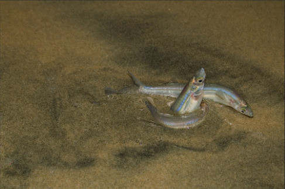
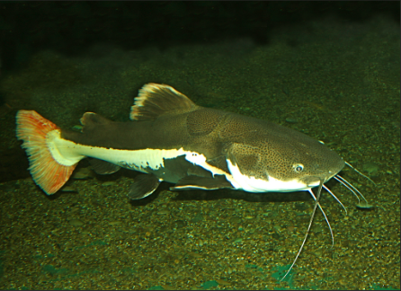
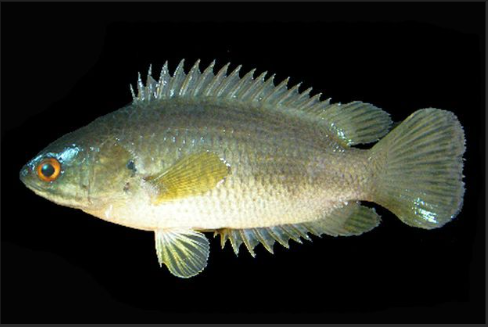

Incroyable ! Certains poissons, grace à un système respitatoire adapté, sortent de l'eau plus ou moins longtemps
Profittant de grandes marées, le grunion s'échoue sur la plage pour pondre ses oeufs.
Certains poissons-chats, à gauche, traversent un champ ou une route pour rejoindre le fleuve qu'ils avaient quitté lors d'inondations, à droite, la perche grimpeuse se déplace sur la terre ferme et escalade les rochers!